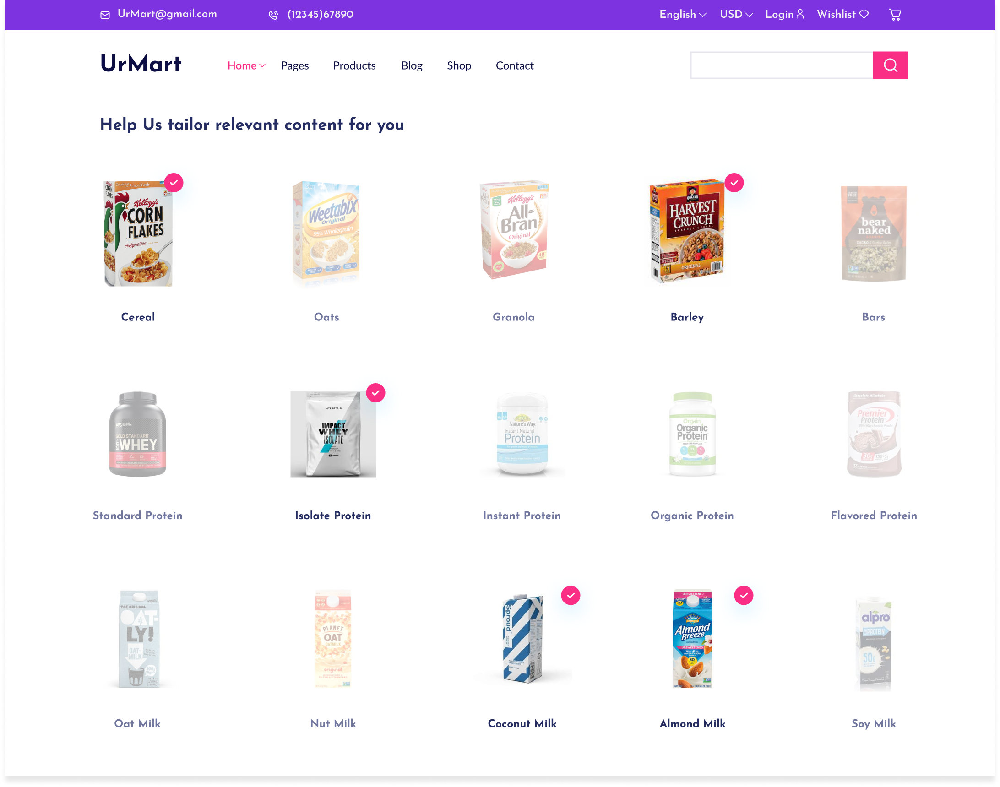

Overview
UrMart is the pioneer of lifestyle companies in Southeast Asia, dedicated to protecting our planet, promoting positive nutrition and driving equity. By improving the user experience of both the online marketplace and the ERP platform, we can accommodate each UrMart business. The new design increased the conversion rate by 180% and attracted millions of new customers in six months.
Time
2020.7-2021.9
My Role
Product Designer
Team
Project Managers
Business Analysts
Front-End Developers
Back-End Developers
Problem Statement
————————From a series of qualitative research, we found that people do not know there’re so many products on UrMart that they might be interested until they see the products. Some people do make an effort to find them, but the majority do not know until we encourage them to try and find more.
Problem for businessThe fact that people don’t spend time browsing on UrMart, and they only come when they already know what to buy, keeps UrMart a choice only for a limited group of buyers.
Goal
————————The primary goal of the project is to design a brand new e-commerce website in order to accommodate each UrMart business and help more buyers find the items that they might need and purchase more on our platform.
The primary business goals for this website included:
Success definition included:
My role
————————
The engineering team in UrMart runs a 2-week sprint. Thus design gets iterated frequently. I was responsible for the end-to-end product development process, including user flow, use cases study, interaction design, visual design and user behavioral data analysis.
How might we help buyers to discover more products that they might be interested on UrMart?
————————

A/B Testing Learnings
The redesign of listing pages was a project that we spotted the chance where we could insert the accessibility and delightful display in buyer’s browsing experience.
A/B Testing Learnings
How might we make the search more discoverable for those who have not gotten the deals they wanted?
————————
A/B Testing Learnings
My Design Process
————————
How We Discover Problems
————————We had run more than 10 researches across traditional markets, supermarkets and gyms. Our goal is to find out what could be the opportunities to improve their buying experience and validate our hypothesis. Then we did user segmentation based on the qualitative and quantitative data, depending on their behaviors, major goals and problems in the journey. Before a quarter starts, I held workshop sessions with the cross-functional squad, including sharing sized user insight, scoping for “How might we“, and brainstorming potential solutions.
![First slide [400x300]](img/UrMart/study1.png)